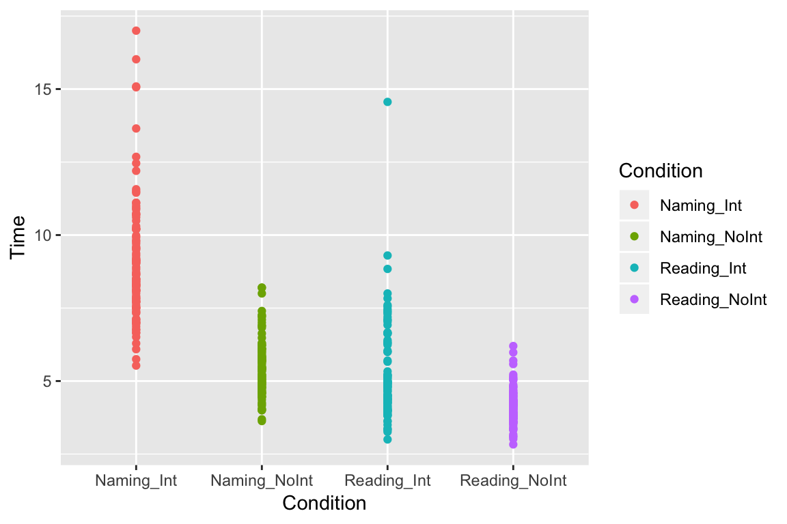
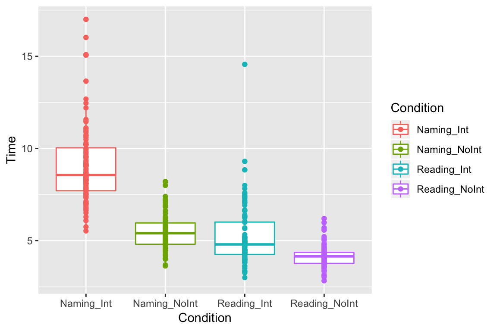
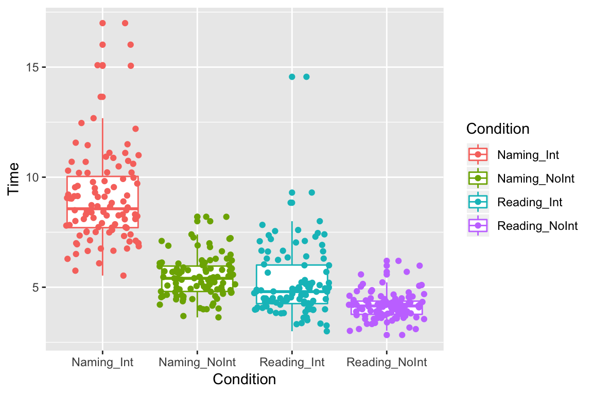
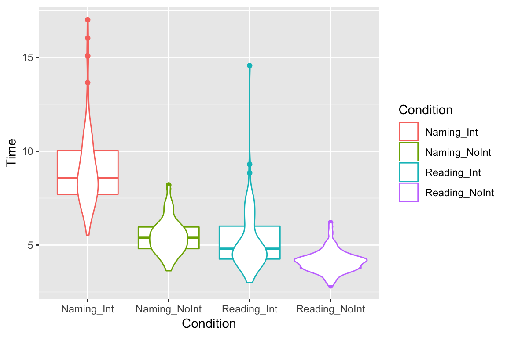

Getting started with R
Ethan Weed
RStudio
The R programming language is an important tool for exploring, visualizing, and analyzing data. It is much more powerful and flexible than point-and-click statistical analysis programs or spreadsheets, but it does take some getting used to, especially if you are unfamiliar with programming. I reccomend RSstudio for working with R. RStudio is a so-called IDE (integrated development environment) for the R language. An IDE is a program that makes it easier to write code and get your work done. RStudio has many many features that make life easier for us when working with R. You can even use RStudio to make slides and webpages. The words you are reading now were typed into RStudio.
Variables
Variables are fundamental to programming in any language. A variable can be thought of as a container, or as a label. Here is an example:
a <- "Hello world!"R uses the syntax <- to show that we are putting something into a variable. Here we are putting the words “Hello world!” into the variable a. Once a variable has been defined, we can do different things with it:
a <- "Hello world!"
b <- 3
c <- 2
print(a)## [1] "Hello world!"b + c## [1] 5b * c## [1] 6b / c## [1] 1.5Variable types
There are different kinds of variables, and they can do different things:
a <- "3.14159"
b <- 3.14159
class(a)## [1] "character"class(b)## [1] "numeric"In this case, a is a character, while b is a number. We could use b to do math, but we couldn’t do math with a.
Dataframes
One of the most useful variable types for data analysis in R is the dataframe. A dataframe is a little bit like a spreadsheet, in that it has rows and columns, but we interact with it a little differently than we do with a spreadsheet like Excel. In Excel, you can just go in and click on a cell and change whatever you want. You can add plots on top of your data, and mess around however you please. This can be great for taking a quick look at data, but it is no good for actual analysis, becasue there is too much room for human error. It is too easy to accidently change something and mess up all your data. Dataframes in R are a little more structured than a spreadsheet, and because we interact with them programatically, by writing code, even if we mess something up, we can always trace back our steps, and figure out what went wrong.
The easiest way to get your data into R is by importing it from a .csv file. Click the button to show the entire dataframe. Here we look at data from students carrying out a version of the Stroop color-naming task. The command sep = "," tells R that the data uses commas to separate the columns. You could use other charaters to separate the columns. As an example, Excel sometimes uses semicolons instead of commas. In this case, we can just write sep = ";". If you don’t use the sep = command, R will just assume it is a comma, so if your data is comma-separated you can just leave this command off.
df <- read.csv("/Users/ethan/Documents/GitHub/ethanweed.github.io/r-tutorials/data/Stroop-raw-over-the-years.csv", sep = ",")
df## Reading_NoInt Naming_Int Naming_NoInt Reading_Int Year
## 1 4.09 7.73 5.15 4.42 2018
## 2 4.55 9.04 5.47 6.35 2018
## 3 4.20 7.49 4.75 4.90 2018
## 4 4.20 9.30 7.00 5.00 2018
## 5 3.40 7.40 5.20 4.30 2018
## 6 3.90 10.30 5.70 4.40 2018
## 7 3.10 10.20 4.90 4.00 2018
## 8 4.80 10.70 5.40 6.30 2018
## 9 3.81 11.45 6.48 7.60 2018
## 10 3.70 15.09 5.05 5.20 2018
## 11 3.02 7.01 4.59 3.63 2018
## 12 3.34 8.83 4.93 4.35 2018
## 13 3.86 7.83 5.00 4.00 2018
## 14 4.04 7.11 4.00 3.00 2018
## 15 4.28 11.11 5.85 6.63 2018
## 16 4.77 10.22 5.13 4.73 2017
## 17 4.69 9.82 5.85 6.62 2017
## 18 5.22 9.55 4.55 4.93 2017
## 19 3.82 8.15 5.46 4.13 2017
## 20 3.70 12.46 5.83 4.26 2017
## 21 3.61 11.10 4.96 3.32 2017
## 22 4.67 6.65 4.26 3.98 2017
## 23 4.21 8.23 4.87 7.10 2017
## 24 5.15 7.91 6.29 6.66 2017
## 25 3.78 8.31 4.58 3.92 2017
## 26 4.26 9.14 5.45 8.84 2017
## 27 4.82 7.70 6.22 7.36 2017
## 28 4.33 7.13 5.23 6.04 2017
## 29 4.50 8.01 5.41 7.83 2017
## 30 5.58 12.68 5.79 4.95 2017
## 31 5.03 9.21 5.75 4.90 2017
## 32 4.15 10.74 6.00 5.00 2017
## 33 4.24 7.00 4.98 4.53 2017
## 34 3.93 8.42 5.18 4.25 2017
## 35 4.20 16.02 7.10 4.38 2017
## 36 4.59 7.08 6.23 4.06 2017
## 37 3.56 9.10 5.62 4.03 2017
## 38 2.83 6.29 4.03 4.15 2017
## 39 3.69 9.06 6.02 5.66 2017
## 40 5.98 9.11 6.89 6.92 2017
## 41 6.20 17.00 6.30 5.70 2017
## 42 5.70 12.20 8.20 5.00 2017
## 43 4.50 9.60 7.20 5.10 2017
## 44 3.90 7.80 5.40 4.50 2017
## 45 4.00 8.50 7.40 5.20 2017
## 46 4.00 8.30 5.69 4.00 2017
## 47 5.10 11.50 8.20 14.56 2017
## 48 3.79 5.75 4.70 4.97 2017
## 49 3.59 6.86 5.45 5.16 2017
## 50 3.48 8.49 5.33 4.86 2016
## 51 4.36 8.50 4.46 7.46 2016
## 52 4.59 8.68 6.09 7.09 2016
## 53 4.22 8.26 4.81 5.15 2016
## 54 4.15 7.53 4.60 3.35 2016
## 55 3.74 5.53 3.63 3.83 2016
## 56 3.73 7.35 4.21 3.88 2016
## 57 3.33 8.90 6.12 4.96 2016
## 58 4.46 8.37 5.08 4.46 2016
## 59 4.42 10.20 6.10 4.33 2016
## 60 4.33 9.50 5.95 4.80 2016
## 61 3.55 8.09 4.46 4.51 2016
## 62 4.61 9.71 7.26 6.40 2016
## 63 3.93 8.63 5.65 7.19 2016
## 64 4.05 6.95 5.70 4.70 2016
## 65 4.15 10.93 5.73 4.81 2016
## 66 3.80 10.70 5.80 7.40 2016
## 67 4.20 8.10 4.80 8.00 2016
## 68 4.40 8.10 5.90 9.30 2016
## 69 4.04 15.06 8.00 6.00 2016
## 70 4.31 11.00 6.90 7.55 2016
## 71 5.06 8.10 5.68 7.30 2016
## 72 4.30 9.37 5.71 6.00 2016
## 73 4.08 10.21 7.23 4.88 2016
## 74 4.33 9.54 5.47 4.21 2016
## 75 4.20 8.40 6.63 4.50 2016
## 76 4.27 8.26 4.90 4.80 2016
## 77 4.22 8.46 5.41 3.98 2016
## 78 4.87 13.65 5.57 7.03 2016
## 79 3.58 6.66 4.36 4.80 2016
## 80 3.63 6.76 4.86 4.54 2016
## 81 3.83 10.88 5.13 4.38 2016
## 82 4.31 8.73 5.06 6.66 2016
## 83 4.13 8.31 4.48 4.36 2016
## 84 3.85 7.71 4.66 3.37 2016
## 85 3.96 8.66 5.40 4.38 2016
## 86 3.38 10.61 4.64 4.95 2016
## 87 3.73 6.09 4.77 5.08 2016
## 88 3.61 7.51 4.05 3.83 2016
## 89 4.20 9.14 6.08 4.64 2016
## 90 3.73 7.60 4.96 5.22 2016
## 91 4.16 6.76 4.45 4.65 2015
## 92 4.35 7.73 4.78 4.46 2015
## 93 3.60 7.00 4.00 3.50 2015
## 94 3.90 9.03 4.60 6.30 2015
## 95 4.22 9.98 6.83 6.24 2015
## 96 4.31 6.51 5.78 4.08 2015
## 97 4.58 11.57 6.22 4.49 2015
## 98 3.93 7.33 5.50 4.26 2015
## 99 4.48 9.78 5.04 5.33 2015
## 100 3.56 7.86 4.16 3.81 2015
## 101 3.10 10.49 5.34 3.62 2015
## 102 4.11 9.17 5.22 3.97 2015
## 103 3.17 7.51 3.69 3.26 2015
## 104 3.85 9.92 6.12 4.28 2015df_2015 <- subset(df, Year == 2015)
df_2015## Reading_NoInt Naming_Int Naming_NoInt Reading_Int Year
## 91 4.16 6.76 4.45 4.65 2015
## 92 4.35 7.73 4.78 4.46 2015
## 93 3.60 7.00 4.00 3.50 2015
## 94 3.90 9.03 4.60 6.30 2015
## 95 4.22 9.98 6.83 6.24 2015
## 96 4.31 6.51 5.78 4.08 2015
## 97 4.58 11.57 6.22 4.49 2015
## 98 3.93 7.33 5.50 4.26 2015
## 99 4.48 9.78 5.04 5.33 2015
## 100 3.56 7.86 4.16 3.81 2015
## 101 3.10 10.49 5.34 3.62 2015
## 102 4.11 9.17 5.22 3.97 2015
## 103 3.17 7.51 3.69 3.26 2015
## 104 3.85 9.92 6.12 4.28 2015You can use the $ symbol to select a single column from the dataframe, using the column header:
Reading_no_interference <- df_2015$Reading_NoInt
Reading_no_interference## [1] 4.16 4.35 3.60 3.90 4.22 4.31 4.58 3.93 4.48 3.56 3.10 4.11 3.17 3.85Exploring data with ggplot
One of the best ways to understand our data is to plot it. R has lots of tools for plotting data, and the package ggplot is one of the best. “”GG" stands for “Grammar of Graphics”. This way of building plots makes it easy to mix and match elements, so you can make just the plot you want to show your data. Ggplot can be installed as a separate package, but it is also part of a package called tidyverse which has lots of great tools for wrangling data. Tidyverse (and other packages) can be installed through RStudio’s package manager (“packages” tab in the lower right frame of the RStudio window) or by typing install.packages("tidyverse")
# Load packages for data handling and plotting
library(tidyverse)
# clear global environment (get rid of any old variables that might be hangning around)
rm(list = ls())
# read in the data
df <- read.csv("/Users/ethan/Documents/GitHub/ethanweed.github.io/r-tutorials/data/Stroop-raw-over-the-years.csv")The function head lets us see just the top of the dataframe. This is handy for just getting a quick peek at the structure of the data, without having to display all of it:
head(df)## Reading_NoInt Naming_Int Naming_NoInt Reading_Int Year
## 1 4.09 7.73 5.15 4.42 2018
## 2 4.55 9.04 5.47 6.35 2018
## 3 4.20 7.49 4.75 4.90 2018
## 4 4.20 9.30 7.00 5.00 2018
## 5 3.40 7.40 5.20 4.30 2018
## 6 3.90 10.30 5.70 4.40 2018These particular data are stored in the so-called “wide” format, in which each row represents a single participant, and each column shows a different kind of information or measurement about the participant. To explore these data, it will be useful to transform them to the “long” format. We can easily do this using the function gather from the “tidyverse” package:
# make a new dataframe with the same data in the "long" format.
df_long <- gather(df, key = "Condition", value = "Time", -Year)
head(df_long)## Year Condition Time
## 1 2018 Reading_NoInt 4.09
## 2 2018 Reading_NoInt 4.55
## 3 2018 Reading_NoInt 4.20
## 4 2018 Reading_NoInt 4.20
## 5 2018 Reading_NoInt 3.40
## 6 2018 Reading_NoInt 3.90If you want, you can check that these are the same data, just arranged in a different way:
# display all the data in the original wide format
df## Reading_NoInt Naming_Int Naming_NoInt Reading_Int Year
## 1 4.09 7.73 5.15 4.42 2018
## 2 4.55 9.04 5.47 6.35 2018
## 3 4.20 7.49 4.75 4.90 2018
## 4 4.20 9.30 7.00 5.00 2018
## 5 3.40 7.40 5.20 4.30 2018
## 6 3.90 10.30 5.70 4.40 2018
## 7 3.10 10.20 4.90 4.00 2018
## 8 4.80 10.70 5.40 6.30 2018
## 9 3.81 11.45 6.48 7.60 2018
## 10 3.70 15.09 5.05 5.20 2018
## 11 3.02 7.01 4.59 3.63 2018
## 12 3.34 8.83 4.93 4.35 2018
## 13 3.86 7.83 5.00 4.00 2018
## 14 4.04 7.11 4.00 3.00 2018
## 15 4.28 11.11 5.85 6.63 2018
## 16 4.77 10.22 5.13 4.73 2017
## 17 4.69 9.82 5.85 6.62 2017
## 18 5.22 9.55 4.55 4.93 2017
## 19 3.82 8.15 5.46 4.13 2017
## 20 3.70 12.46 5.83 4.26 2017
## 21 3.61 11.10 4.96 3.32 2017
## 22 4.67 6.65 4.26 3.98 2017
## 23 4.21 8.23 4.87 7.10 2017
## 24 5.15 7.91 6.29 6.66 2017
## 25 3.78 8.31 4.58 3.92 2017
## 26 4.26 9.14 5.45 8.84 2017
## 27 4.82 7.70 6.22 7.36 2017
## 28 4.33 7.13 5.23 6.04 2017
## 29 4.50 8.01 5.41 7.83 2017
## 30 5.58 12.68 5.79 4.95 2017
## 31 5.03 9.21 5.75 4.90 2017
## 32 4.15 10.74 6.00 5.00 2017
## 33 4.24 7.00 4.98 4.53 2017
## 34 3.93 8.42 5.18 4.25 2017
## 35 4.20 16.02 7.10 4.38 2017
## 36 4.59 7.08 6.23 4.06 2017
## 37 3.56 9.10 5.62 4.03 2017
## 38 2.83 6.29 4.03 4.15 2017
## 39 3.69 9.06 6.02 5.66 2017
## 40 5.98 9.11 6.89 6.92 2017
## 41 6.20 17.00 6.30 5.70 2017
## 42 5.70 12.20 8.20 5.00 2017
## 43 4.50 9.60 7.20 5.10 2017
## 44 3.90 7.80 5.40 4.50 2017
## 45 4.00 8.50 7.40 5.20 2017
## 46 4.00 8.30 5.69 4.00 2017
## 47 5.10 11.50 8.20 14.56 2017
## 48 3.79 5.75 4.70 4.97 2017
## 49 3.59 6.86 5.45 5.16 2017
## 50 3.48 8.49 5.33 4.86 2016
## 51 4.36 8.50 4.46 7.46 2016
## 52 4.59 8.68 6.09 7.09 2016
## 53 4.22 8.26 4.81 5.15 2016
## 54 4.15 7.53 4.60 3.35 2016
## 55 3.74 5.53 3.63 3.83 2016
## 56 3.73 7.35 4.21 3.88 2016
## 57 3.33 8.90 6.12 4.96 2016
## 58 4.46 8.37 5.08 4.46 2016
## 59 4.42 10.20 6.10 4.33 2016
## 60 4.33 9.50 5.95 4.80 2016
## 61 3.55 8.09 4.46 4.51 2016
## 62 4.61 9.71 7.26 6.40 2016
## 63 3.93 8.63 5.65 7.19 2016
## 64 4.05 6.95 5.70 4.70 2016
## 65 4.15 10.93 5.73 4.81 2016
## 66 3.80 10.70 5.80 7.40 2016
## 67 4.20 8.10 4.80 8.00 2016
## 68 4.40 8.10 5.90 9.30 2016
## 69 4.04 15.06 8.00 6.00 2016
## 70 4.31 11.00 6.90 7.55 2016
## 71 5.06 8.10 5.68 7.30 2016
## 72 4.30 9.37 5.71 6.00 2016
## 73 4.08 10.21 7.23 4.88 2016
## 74 4.33 9.54 5.47 4.21 2016
## 75 4.20 8.40 6.63 4.50 2016
## 76 4.27 8.26 4.90 4.80 2016
## 77 4.22 8.46 5.41 3.98 2016
## 78 4.87 13.65 5.57 7.03 2016
## 79 3.58 6.66 4.36 4.80 2016
## 80 3.63 6.76 4.86 4.54 2016
## 81 3.83 10.88 5.13 4.38 2016
## 82 4.31 8.73 5.06 6.66 2016
## 83 4.13 8.31 4.48 4.36 2016
## 84 3.85 7.71 4.66 3.37 2016
## 85 3.96 8.66 5.40 4.38 2016
## 86 3.38 10.61 4.64 4.95 2016
## 87 3.73 6.09 4.77 5.08 2016
## 88 3.61 7.51 4.05 3.83 2016
## 89 4.20 9.14 6.08 4.64 2016
## 90 3.73 7.60 4.96 5.22 2016
## 91 4.16 6.76 4.45 4.65 2015
## 92 4.35 7.73 4.78 4.46 2015
## 93 3.60 7.00 4.00 3.50 2015
## 94 3.90 9.03 4.60 6.30 2015
## 95 4.22 9.98 6.83 6.24 2015
## 96 4.31 6.51 5.78 4.08 2015
## 97 4.58 11.57 6.22 4.49 2015
## 98 3.93 7.33 5.50 4.26 2015
## 99 4.48 9.78 5.04 5.33 2015
## 100 3.56 7.86 4.16 3.81 2015
## 101 3.10 10.49 5.34 3.62 2015
## 102 4.11 9.17 5.22 3.97 2015
## 103 3.17 7.51 3.69 3.26 2015
## 104 3.85 9.92 6.12 4.28 2015# display all the data in long format
df_long## Year Condition Time
## 1 2018 Reading_NoInt 4.09
## 2 2018 Reading_NoInt 4.55
## 3 2018 Reading_NoInt 4.20
## 4 2018 Reading_NoInt 4.20
## 5 2018 Reading_NoInt 3.40
## 6 2018 Reading_NoInt 3.90
## 7 2018 Reading_NoInt 3.10
## 8 2018 Reading_NoInt 4.80
## 9 2018 Reading_NoInt 3.81
## 10 2018 Reading_NoInt 3.70
## 11 2018 Reading_NoInt 3.02
## 12 2018 Reading_NoInt 3.34
## 13 2018 Reading_NoInt 3.86
## 14 2018 Reading_NoInt 4.04
## 15 2018 Reading_NoInt 4.28
## 16 2017 Reading_NoInt 4.77
## 17 2017 Reading_NoInt 4.69
## 18 2017 Reading_NoInt 5.22
## 19 2017 Reading_NoInt 3.82
## 20 2017 Reading_NoInt 3.70
## 21 2017 Reading_NoInt 3.61
## 22 2017 Reading_NoInt 4.67
## 23 2017 Reading_NoInt 4.21
## 24 2017 Reading_NoInt 5.15
## 25 2017 Reading_NoInt 3.78
## 26 2017 Reading_NoInt 4.26
## 27 2017 Reading_NoInt 4.82
## 28 2017 Reading_NoInt 4.33
## 29 2017 Reading_NoInt 4.50
## 30 2017 Reading_NoInt 5.58
## 31 2017 Reading_NoInt 5.03
## 32 2017 Reading_NoInt 4.15
## 33 2017 Reading_NoInt 4.24
## 34 2017 Reading_NoInt 3.93
## 35 2017 Reading_NoInt 4.20
## 36 2017 Reading_NoInt 4.59
## 37 2017 Reading_NoInt 3.56
## 38 2017 Reading_NoInt 2.83
## 39 2017 Reading_NoInt 3.69
## 40 2017 Reading_NoInt 5.98
## 41 2017 Reading_NoInt 6.20
## 42 2017 Reading_NoInt 5.70
## 43 2017 Reading_NoInt 4.50
## 44 2017 Reading_NoInt 3.90
## 45 2017 Reading_NoInt 4.00
## 46 2017 Reading_NoInt 4.00
## 47 2017 Reading_NoInt 5.10
## 48 2017 Reading_NoInt 3.79
## 49 2017 Reading_NoInt 3.59
## 50 2016 Reading_NoInt 3.48
## 51 2016 Reading_NoInt 4.36
## 52 2016 Reading_NoInt 4.59
## 53 2016 Reading_NoInt 4.22
## 54 2016 Reading_NoInt 4.15
## 55 2016 Reading_NoInt 3.74
## 56 2016 Reading_NoInt 3.73
## 57 2016 Reading_NoInt 3.33
## 58 2016 Reading_NoInt 4.46
## 59 2016 Reading_NoInt 4.42
## 60 2016 Reading_NoInt 4.33
## 61 2016 Reading_NoInt 3.55
## 62 2016 Reading_NoInt 4.61
## 63 2016 Reading_NoInt 3.93
## 64 2016 Reading_NoInt 4.05
## 65 2016 Reading_NoInt 4.15
## 66 2016 Reading_NoInt 3.80
## 67 2016 Reading_NoInt 4.20
## 68 2016 Reading_NoInt 4.40
## 69 2016 Reading_NoInt 4.04
## 70 2016 Reading_NoInt 4.31
## 71 2016 Reading_NoInt 5.06
## 72 2016 Reading_NoInt 4.30
## 73 2016 Reading_NoInt 4.08
## 74 2016 Reading_NoInt 4.33
## 75 2016 Reading_NoInt 4.20
## 76 2016 Reading_NoInt 4.27
## 77 2016 Reading_NoInt 4.22
## 78 2016 Reading_NoInt 4.87
## 79 2016 Reading_NoInt 3.58
## 80 2016 Reading_NoInt 3.63
## 81 2016 Reading_NoInt 3.83
## 82 2016 Reading_NoInt 4.31
## 83 2016 Reading_NoInt 4.13
## 84 2016 Reading_NoInt 3.85
## 85 2016 Reading_NoInt 3.96
## 86 2016 Reading_NoInt 3.38
## 87 2016 Reading_NoInt 3.73
## 88 2016 Reading_NoInt 3.61
## 89 2016 Reading_NoInt 4.20
## 90 2016 Reading_NoInt 3.73
## 91 2015 Reading_NoInt 4.16
## 92 2015 Reading_NoInt 4.35
## 93 2015 Reading_NoInt 3.60
## 94 2015 Reading_NoInt 3.90
## 95 2015 Reading_NoInt 4.22
## 96 2015 Reading_NoInt 4.31
## 97 2015 Reading_NoInt 4.58
## 98 2015 Reading_NoInt 3.93
## 99 2015 Reading_NoInt 4.48
## 100 2015 Reading_NoInt 3.56
## 101 2015 Reading_NoInt 3.10
## 102 2015 Reading_NoInt 4.11
## 103 2015 Reading_NoInt 3.17
## 104 2015 Reading_NoInt 3.85
## 105 2018 Naming_Int 7.73
## 106 2018 Naming_Int 9.04
## 107 2018 Naming_Int 7.49
## 108 2018 Naming_Int 9.30
## 109 2018 Naming_Int 7.40
## 110 2018 Naming_Int 10.30
## 111 2018 Naming_Int 10.20
## 112 2018 Naming_Int 10.70
## 113 2018 Naming_Int 11.45
## 114 2018 Naming_Int 15.09
## 115 2018 Naming_Int 7.01
## 116 2018 Naming_Int 8.83
## 117 2018 Naming_Int 7.83
## 118 2018 Naming_Int 7.11
## 119 2018 Naming_Int 11.11
## 120 2017 Naming_Int 10.22
## 121 2017 Naming_Int 9.82
## 122 2017 Naming_Int 9.55
## 123 2017 Naming_Int 8.15
## 124 2017 Naming_Int 12.46
## 125 2017 Naming_Int 11.10
## 126 2017 Naming_Int 6.65
## 127 2017 Naming_Int 8.23
## 128 2017 Naming_Int 7.91
## 129 2017 Naming_Int 8.31
## 130 2017 Naming_Int 9.14
## 131 2017 Naming_Int 7.70
## 132 2017 Naming_Int 7.13
## 133 2017 Naming_Int 8.01
## 134 2017 Naming_Int 12.68
## 135 2017 Naming_Int 9.21
## 136 2017 Naming_Int 10.74
## 137 2017 Naming_Int 7.00
## 138 2017 Naming_Int 8.42
## 139 2017 Naming_Int 16.02
## 140 2017 Naming_Int 7.08
## 141 2017 Naming_Int 9.10
## 142 2017 Naming_Int 6.29
## 143 2017 Naming_Int 9.06
## 144 2017 Naming_Int 9.11
## 145 2017 Naming_Int 17.00
## 146 2017 Naming_Int 12.20
## 147 2017 Naming_Int 9.60
## 148 2017 Naming_Int 7.80
## 149 2017 Naming_Int 8.50
## 150 2017 Naming_Int 8.30
## 151 2017 Naming_Int 11.50
## 152 2017 Naming_Int 5.75
## 153 2017 Naming_Int 6.86
## 154 2016 Naming_Int 8.49
## 155 2016 Naming_Int 8.50
## 156 2016 Naming_Int 8.68
## 157 2016 Naming_Int 8.26
## 158 2016 Naming_Int 7.53
## 159 2016 Naming_Int 5.53
## 160 2016 Naming_Int 7.35
## 161 2016 Naming_Int 8.90
## 162 2016 Naming_Int 8.37
## 163 2016 Naming_Int 10.20
## 164 2016 Naming_Int 9.50
## 165 2016 Naming_Int 8.09
## 166 2016 Naming_Int 9.71
## 167 2016 Naming_Int 8.63
## 168 2016 Naming_Int 6.95
## 169 2016 Naming_Int 10.93
## 170 2016 Naming_Int 10.70
## 171 2016 Naming_Int 8.10
## 172 2016 Naming_Int 8.10
## 173 2016 Naming_Int 15.06
## 174 2016 Naming_Int 11.00
## 175 2016 Naming_Int 8.10
## 176 2016 Naming_Int 9.37
## 177 2016 Naming_Int 10.21
## 178 2016 Naming_Int 9.54
## 179 2016 Naming_Int 8.40
## 180 2016 Naming_Int 8.26
## 181 2016 Naming_Int 8.46
## 182 2016 Naming_Int 13.65
## 183 2016 Naming_Int 6.66
## 184 2016 Naming_Int 6.76
## 185 2016 Naming_Int 10.88
## 186 2016 Naming_Int 8.73
## 187 2016 Naming_Int 8.31
## 188 2016 Naming_Int 7.71
## 189 2016 Naming_Int 8.66
## 190 2016 Naming_Int 10.61
## 191 2016 Naming_Int 6.09
## 192 2016 Naming_Int 7.51
## 193 2016 Naming_Int 9.14
## 194 2016 Naming_Int 7.60
## 195 2015 Naming_Int 6.76
## 196 2015 Naming_Int 7.73
## 197 2015 Naming_Int 7.00
## 198 2015 Naming_Int 9.03
## 199 2015 Naming_Int 9.98
## 200 2015 Naming_Int 6.51
## 201 2015 Naming_Int 11.57
## 202 2015 Naming_Int 7.33
## 203 2015 Naming_Int 9.78
## 204 2015 Naming_Int 7.86
## 205 2015 Naming_Int 10.49
## 206 2015 Naming_Int 9.17
## 207 2015 Naming_Int 7.51
## 208 2015 Naming_Int 9.92
## 209 2018 Naming_NoInt 5.15
## 210 2018 Naming_NoInt 5.47
## 211 2018 Naming_NoInt 4.75
## 212 2018 Naming_NoInt 7.00
## 213 2018 Naming_NoInt 5.20
## 214 2018 Naming_NoInt 5.70
## 215 2018 Naming_NoInt 4.90
## 216 2018 Naming_NoInt 5.40
## 217 2018 Naming_NoInt 6.48
## 218 2018 Naming_NoInt 5.05
## 219 2018 Naming_NoInt 4.59
## 220 2018 Naming_NoInt 4.93
## 221 2018 Naming_NoInt 5.00
## 222 2018 Naming_NoInt 4.00
## 223 2018 Naming_NoInt 5.85
## 224 2017 Naming_NoInt 5.13
## 225 2017 Naming_NoInt 5.85
## 226 2017 Naming_NoInt 4.55
## 227 2017 Naming_NoInt 5.46
## 228 2017 Naming_NoInt 5.83
## 229 2017 Naming_NoInt 4.96
## 230 2017 Naming_NoInt 4.26
## 231 2017 Naming_NoInt 4.87
## 232 2017 Naming_NoInt 6.29
## 233 2017 Naming_NoInt 4.58
## 234 2017 Naming_NoInt 5.45
## 235 2017 Naming_NoInt 6.22
## 236 2017 Naming_NoInt 5.23
## 237 2017 Naming_NoInt 5.41
## 238 2017 Naming_NoInt 5.79
## 239 2017 Naming_NoInt 5.75
## 240 2017 Naming_NoInt 6.00
## 241 2017 Naming_NoInt 4.98
## 242 2017 Naming_NoInt 5.18
## 243 2017 Naming_NoInt 7.10
## 244 2017 Naming_NoInt 6.23
## 245 2017 Naming_NoInt 5.62
## 246 2017 Naming_NoInt 4.03
## 247 2017 Naming_NoInt 6.02
## 248 2017 Naming_NoInt 6.89
## 249 2017 Naming_NoInt 6.30
## 250 2017 Naming_NoInt 8.20
## 251 2017 Naming_NoInt 7.20
## 252 2017 Naming_NoInt 5.40
## 253 2017 Naming_NoInt 7.40
## 254 2017 Naming_NoInt 5.69
## 255 2017 Naming_NoInt 8.20
## 256 2017 Naming_NoInt 4.70
## 257 2017 Naming_NoInt 5.45
## 258 2016 Naming_NoInt 5.33
## 259 2016 Naming_NoInt 4.46
## 260 2016 Naming_NoInt 6.09
## 261 2016 Naming_NoInt 4.81
## 262 2016 Naming_NoInt 4.60
## 263 2016 Naming_NoInt 3.63
## 264 2016 Naming_NoInt 4.21
## 265 2016 Naming_NoInt 6.12
## 266 2016 Naming_NoInt 5.08
## 267 2016 Naming_NoInt 6.10
## 268 2016 Naming_NoInt 5.95
## 269 2016 Naming_NoInt 4.46
## 270 2016 Naming_NoInt 7.26
## 271 2016 Naming_NoInt 5.65
## 272 2016 Naming_NoInt 5.70
## 273 2016 Naming_NoInt 5.73
## 274 2016 Naming_NoInt 5.80
## 275 2016 Naming_NoInt 4.80
## 276 2016 Naming_NoInt 5.90
## 277 2016 Naming_NoInt 8.00
## 278 2016 Naming_NoInt 6.90
## 279 2016 Naming_NoInt 5.68
## 280 2016 Naming_NoInt 5.71
## 281 2016 Naming_NoInt 7.23
## 282 2016 Naming_NoInt 5.47
## 283 2016 Naming_NoInt 6.63
## 284 2016 Naming_NoInt 4.90
## 285 2016 Naming_NoInt 5.41
## 286 2016 Naming_NoInt 5.57
## 287 2016 Naming_NoInt 4.36
## 288 2016 Naming_NoInt 4.86
## 289 2016 Naming_NoInt 5.13
## 290 2016 Naming_NoInt 5.06
## 291 2016 Naming_NoInt 4.48
## 292 2016 Naming_NoInt 4.66
## 293 2016 Naming_NoInt 5.40
## 294 2016 Naming_NoInt 4.64
## 295 2016 Naming_NoInt 4.77
## 296 2016 Naming_NoInt 4.05
## 297 2016 Naming_NoInt 6.08
## 298 2016 Naming_NoInt 4.96
## 299 2015 Naming_NoInt 4.45
## 300 2015 Naming_NoInt 4.78
## 301 2015 Naming_NoInt 4.00
## 302 2015 Naming_NoInt 4.60
## 303 2015 Naming_NoInt 6.83
## 304 2015 Naming_NoInt 5.78
## 305 2015 Naming_NoInt 6.22
## 306 2015 Naming_NoInt 5.50
## 307 2015 Naming_NoInt 5.04
## 308 2015 Naming_NoInt 4.16
## 309 2015 Naming_NoInt 5.34
## 310 2015 Naming_NoInt 5.22
## 311 2015 Naming_NoInt 3.69
## 312 2015 Naming_NoInt 6.12
## 313 2018 Reading_Int 4.42
## 314 2018 Reading_Int 6.35
## 315 2018 Reading_Int 4.90
## 316 2018 Reading_Int 5.00
## 317 2018 Reading_Int 4.30
## 318 2018 Reading_Int 4.40
## 319 2018 Reading_Int 4.00
## 320 2018 Reading_Int 6.30
## 321 2018 Reading_Int 7.60
## 322 2018 Reading_Int 5.20
## 323 2018 Reading_Int 3.63
## 324 2018 Reading_Int 4.35
## 325 2018 Reading_Int 4.00
## 326 2018 Reading_Int 3.00
## 327 2018 Reading_Int 6.63
## 328 2017 Reading_Int 4.73
## 329 2017 Reading_Int 6.62
## 330 2017 Reading_Int 4.93
## 331 2017 Reading_Int 4.13
## 332 2017 Reading_Int 4.26
## 333 2017 Reading_Int 3.32
## 334 2017 Reading_Int 3.98
## 335 2017 Reading_Int 7.10
## 336 2017 Reading_Int 6.66
## 337 2017 Reading_Int 3.92
## 338 2017 Reading_Int 8.84
## 339 2017 Reading_Int 7.36
## 340 2017 Reading_Int 6.04
## 341 2017 Reading_Int 7.83
## 342 2017 Reading_Int 4.95
## 343 2017 Reading_Int 4.90
## 344 2017 Reading_Int 5.00
## 345 2017 Reading_Int 4.53
## 346 2017 Reading_Int 4.25
## 347 2017 Reading_Int 4.38
## 348 2017 Reading_Int 4.06
## 349 2017 Reading_Int 4.03
## 350 2017 Reading_Int 4.15
## 351 2017 Reading_Int 5.66
## 352 2017 Reading_Int 6.92
## 353 2017 Reading_Int 5.70
## 354 2017 Reading_Int 5.00
## 355 2017 Reading_Int 5.10
## 356 2017 Reading_Int 4.50
## 357 2017 Reading_Int 5.20
## 358 2017 Reading_Int 4.00
## 359 2017 Reading_Int 14.56
## 360 2017 Reading_Int 4.97
## 361 2017 Reading_Int 5.16
## 362 2016 Reading_Int 4.86
## 363 2016 Reading_Int 7.46
## 364 2016 Reading_Int 7.09
## 365 2016 Reading_Int 5.15
## 366 2016 Reading_Int 3.35
## 367 2016 Reading_Int 3.83
## 368 2016 Reading_Int 3.88
## 369 2016 Reading_Int 4.96
## 370 2016 Reading_Int 4.46
## 371 2016 Reading_Int 4.33
## 372 2016 Reading_Int 4.80
## 373 2016 Reading_Int 4.51
## 374 2016 Reading_Int 6.40
## 375 2016 Reading_Int 7.19
## 376 2016 Reading_Int 4.70
## 377 2016 Reading_Int 4.81
## 378 2016 Reading_Int 7.40
## 379 2016 Reading_Int 8.00
## 380 2016 Reading_Int 9.30
## 381 2016 Reading_Int 6.00
## 382 2016 Reading_Int 7.55
## 383 2016 Reading_Int 7.30
## 384 2016 Reading_Int 6.00
## 385 2016 Reading_Int 4.88
## 386 2016 Reading_Int 4.21
## 387 2016 Reading_Int 4.50
## 388 2016 Reading_Int 4.80
## 389 2016 Reading_Int 3.98
## 390 2016 Reading_Int 7.03
## 391 2016 Reading_Int 4.80
## 392 2016 Reading_Int 4.54
## 393 2016 Reading_Int 4.38
## 394 2016 Reading_Int 6.66
## 395 2016 Reading_Int 4.36
## 396 2016 Reading_Int 3.37
## 397 2016 Reading_Int 4.38
## 398 2016 Reading_Int 4.95
## 399 2016 Reading_Int 5.08
## 400 2016 Reading_Int 3.83
## 401 2016 Reading_Int 4.64
## 402 2016 Reading_Int 5.22
## 403 2015 Reading_Int 4.65
## 404 2015 Reading_Int 4.46
## 405 2015 Reading_Int 3.50
## 406 2015 Reading_Int 6.30
## 407 2015 Reading_Int 6.24
## 408 2015 Reading_Int 4.08
## 409 2015 Reading_Int 4.49
## 410 2015 Reading_Int 4.26
## 411 2015 Reading_Int 5.33
## 412 2015 Reading_Int 3.81
## 413 2015 Reading_Int 3.62
## 414 2015 Reading_Int 3.97
## 415 2015 Reading_Int 3.26
## 416 2015 Reading_Int 4.28Bar plots
There are many different ways these data could be represented graphically. A common way to look at data from different experimental conditions is to make a bar plot. First, write ggplot followed by (). Inside the parentheses, write the name of the dataframe that contains the data your graph will be built from (if you want, you can also write e.g. data = df_long), but you don’t have to. Then define “aesthetics” by writing aes followed by (). Inside the parentheses, define the x and y axes. You don’t have to write x = or y =, but I think it makes it clearer. If you don’t, R will assume that the first axis you write is x. As you will see later, there are other things you can add to the aesthetics. Next, write + and the kind of graph you want. These are called “geometries”. To make a barplot, write geom_bar(). By default, barplots show frequency counts, so the command stat = "identity" is needed if we want barplots to show us the mean value, but usually you won’t need this.
ggplot(df_long, aes(x = Condition, y = Time)) +
geom_bar(stat = "identity")Maybe we would like to see the columns as horizontal bars (with coordinates flipped):
ggplot(df_long, aes(x = Condition, y = Time)) +
geom_bar(stat = "identity") +
coord_flip()For reasons that are unknown to me, geom_bar displays our data here multiplied by 100. An easy fix is to divide the data by 100. If we don’t want the y-axis label to read “Time/100”, we then need to use labs to specifiy the y-axis label.
ggplot(df_long, aes(x = Condition, y = Time/100)) +
geom_bar(stat = "identity") +
labs(
y = "Time (sec)"
)Extracting summary statistics
If we want to see e.g. what the mean of a column of data in a dataframe is, there are a few options. One is to use summary:
summary(df)## Reading_NoInt Naming_Int Naming_NoInt Reading_Int
## Min. :2.830 Min. : 5.530 Min. :3.630 Min. : 3.000
## 1st Qu.:3.770 1st Qu.: 7.707 1st Qu.:4.808 1st Qu.: 4.258
## Median :4.150 Median : 8.565 Median :5.405 Median : 4.800
## Mean :4.143 Mean : 9.049 Mean :5.472 Mean : 5.212
## 3rd Qu.:4.370 3rd Qu.:10.035 3rd Qu.:5.963 3rd Qu.: 6.010
## Max. :6.200 Max. :17.000 Max. :8.200 Max. :14.560
## Year
## Min. :2015
## 1st Qu.:2016
## Median :2016
## Mean :2016
## 3rd Qu.:2017
## Max. :2018But maybe this gives us more than we would like. A simpler way to just get the means would be to use colMeans()
colMeans(df)## Reading_NoInt Naming_Int Naming_NoInt Reading_Int Year
## 4.142500 9.048654 5.471635 5.211635 2016.480769# we could also put these means into a separate variable, if we would like to access them later:
column_means <- colMeans(df)Scatter plots
One problem with bar plots is that they usually only represent the mean value, and give little feeling for what the underlying data look like. With a scatter plot, we can see each of our individual data points. While we’re at it, let’s add some color just to make it pretty:
ggplot(df_long, aes(x = Condition, y = Time, color = Condition)) +
geom_point()
Box plots
Box plots are nice for adding some descriptive statistics to the plot. Here, the horizontal line shows the median value, and the top and bottom parts of the box (the hinges) show the 2nd and 3rd quartiles. The vertical lines (whiskers) give an indication of outliers (for more details, type ? geom_boxplot in the console):
ggplot(df_long, aes(x = Condition, y = Time, color = Condition)) +
geom_boxplot()We can also layer different types of plots on top of each other, e.g. we can plot all the points on top of our boxplots:
ggplot(df_long, aes(x = Condition, y = Time, color = Condition)) +
geom_boxplot() +
geom_point()
Jitter
There are a lot of points lying on top of each other, so it is hard to see them all. One way to see them is to add “jitter” to spread them out a bit:
ggplot(df_long, aes(x = Condition, y = Time, color = Condition)) +
geom_boxplot() +
geom_jitter()
Violin plots
Another method is to show probability density using violin plots:
ggplot(df_long, aes(x = Condition, y = Time, color = Condition)) +
geom_boxplot() +
geom_violin()
If we flip them on their sides, they kinda look like X-wing fighters, or maybe geese. Did we just invent the goose plot?
ggplot(df_long, aes(x = Condition, y = Time, color = Condition)) +
geom_boxplot() +
geom_violin() +
coord_flip() +
theme_classic()Combined plots
We could also combine several of our plots into one plot, e.g. to make it easier to compare them. Click the button to see the code. Although it looks like a lot, you will see it is mostly just copy/paste.
# load the library "patchwork". We will use this to combine the plots. Another option is the function "ggarrange" from the package "ggpubr". Both are good. Patchwork is a teeny bit harder to install than e.g. tidyverse, but not much. You just need to type:
# install.packages("devtools")
# devtools::install_github("thomasp85/patchwork")
library(patchwork)
# theme_classic takes away the background grid for a cleaner look. There are many other themes. Try them, and find one you like. There are also many different color options.
# theme(legend.position="none") takes away the legends, which in this case provided redundant information, and cluttered up the plot. There are many other theme options to make your plot look just the way you want.
# make a barplot and call it "bar". Notice we have to write "fill" instead of "color", otherwise it will look bad. Try and see.
bar <- ggplot(df_long, aes(x = Condition, y = Time, fill = Condition)) +
geom_bar(stat = "identity") +
theme_classic() +
coord_flip() +
theme(legend.position="none")
# make a boxplot and call it "box"
box <- ggplot(df_long, aes(x = Condition, y = Time, color = Condition)) +
geom_boxplot() +
coord_flip() +
theme_classic() +
theme(legend.position="none")
# make a scatterplot and call it "scatter"
scatter <- ggplot(df_long, aes(x = Condition, y = Time, color = Condition)) +
geom_point() +
coord_flip() +
theme_classic() +
theme(legend.position="none")
# make a "gooseplot" and call it "goose". Just to be clear, there is no such thing as a gooseplot. I just made that up.
goose <- ggplot(df_long, aes(x = Condition, y = Time, color = Condition)) +
geom_boxplot() +
geom_violin() +
coord_flip() +
theme_classic() +
theme(legend.position="none")
# Because we have "patchwork" loaded, we can just "add" the plots together.
bar + box + scatter + goose# Alternatively, with ggpubr:
#library(ggpubr)
#ggarrange(bar, box, scatter, goose, ncol = 2, nrow = 2)Correlations
One of the most basic things a researcher is interested in is seeing whether there is any relationship between variables. Here, we will look at data from Nettle (1998).

Nettle recorded the number of languages, the area (in km2), the population, the mean growing season (MGS, in months), the number of weather stations measuring MGS, and the standard deviation of the measurements of MGS from the different weather stations in each country.
Plotting Correlations
We can use ggplot to see if there is any clear relationship between these variables. We might expect that there would be a relationship between the area of a country and the population of that country. We can use the geom_smooth and the geom_point functions to take a quick look.
rm(list = ls())
library(tidyverse)
df <- read.csv("/Users/ethan/Documents/GitHub/ethanweed.github.io/r-tutorials/data/nettle_1998.csv", sep = ";")
# Nettle reports the population data in 1000's, probably to save room in the data table, but that is an unusual number to think about population in, so let's convert to millions. While we're at it, let's convert km2 to millions, so that the number doesn't appear in scientific notation on the x-axis
df$Population <- df$Population*1000/1000000
df$Area <- df$Area/1000000
p1 <- ggplot(df, aes(Area, Population)) +
geom_point() +
geom_smooth(method = "lm") +
geom_text(aes(label = Country)) +
theme_classic() +
labs(y = "Population (millions)",
x = (bquote('Area (million km'^2*')')))
p1Log Scale for Plotting
There seems to be some sort of relationship between Area and Population, but it is hard to see what is going on, because the size of India’s population relative to its area squishes all the other data down into the bottom left corner. One way to deal with this is by converting the population to a logarithmic scale.
library(tidyverse)
library(ggpubr)
df$Population_log <- log(df$Population)
df$Area_log <- log(df$Area)
df$Languages_log <- log(df$Languages)
p1 <- ggplot(df, aes(Area_log, Population_log)) +
geom_point() +
geom_smooth(method = "lm") +
geom_text(aes(label = Country)) +
theme_classic() +
labs(y = "Population ((log) millions)",
x = (bquote('Area ((log) million km'^2*')')),
title = "With data labels")
p2 <- ggplot(df, aes(Area_log, Population_log)) +
geom_point() +
geom_smooth(method = "lm") +
theme_classic() +
labs(y = NULL,
x = (bquote('Area ((log) million km'^2*')')),
title = "Without data labels")
p <- ggarrange(p1, p2, ncol = 2)
pConverting to a log scale makes things easier to see, and if we take the data labels away, it is even easier to see the relationship. The line through the points represents a linear model, and the shading around the line represents a 95% confidence interval. The closer this shaded area is to the line, the more confidence we can have in the predictions of the model.
Nettle was mainly interested in the relationship between language diversity and climate. The Mean Growing Season (MGS) is a measurement for quantifying the more fluffy concept “climate”. The number of languages in a country could be expected to increase with the size of the country and the size of the population (and we have already seen that area and population appear to be correlated with each other), but might language diversity be related to climate as well? We can plot these three combinations next to each other to get an idea:
p1 <- ggplot(df, aes(Area_log, Languages_log)) +
geom_point() +
geom_smooth(method = "lm") +
theme_classic() +
labs(y = "Number of Languages",
x = (bquote('Area ((log) million km'^2*')')),
title = "Area")
p2 <- ggplot(df, aes(Population_log, Languages_log)) +
geom_point() +
geom_smooth(method = "lm") +
theme_classic() +
labs(y = NULL,
x = "Population ((log) millions)",
title = "Population")
p3 <- ggplot(df, aes(MGS, Languages_log)) +
geom_point() +
geom_smooth(method = "lm") +
theme_classic() +
labs(y = NULL,
x = "Mean Growing Season",
title = "Climate")
p <- ggarrange(p1, p2, p3, ncol = 3)
pPlotting multiple lines
It does appear that there is a relationship between climate and language diversity. But Nettle also mentions that some of the countries he records in his data have a variable growing season, and so may not follow the same pattern as those with a consistent growing season. By using the color argument to ggplot, we can easily check to see if countries with a variable growing season follow a different pattern than those with a consistent growing season:
df$GS_Variation <- ifelse(df$Variable_GS == "Y", "Variable", "Consistent")
p1 <- ggplot(df, aes(MGS, Languages_log, color = GS_Variation)) +
geom_point() +
geom_smooth(method = "lm") +
theme_classic() +
labs(y = NULL,
x = "Mean Growing Season",
title = "Relationship Between Climate and Language Diversity")
p1